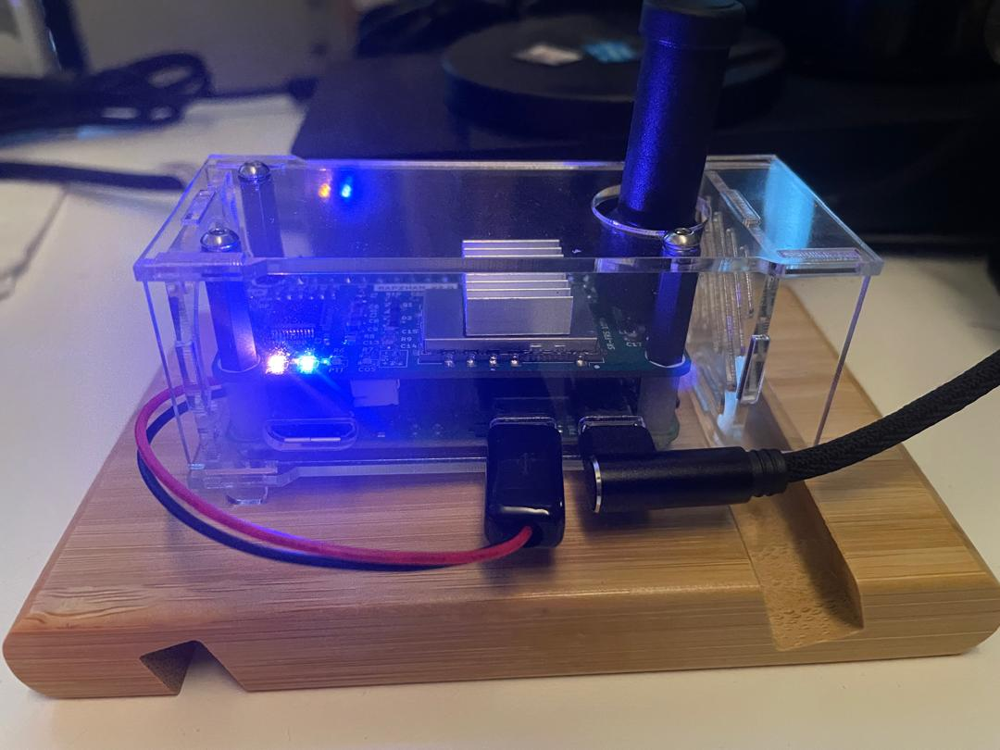

Authentication Required
Add a New Blog Post
4 Dec 2024
I was talking to one of my friend 9W2KXK on radio. He was sharing that he is using his laptop to QSO via DVswitch. Remind me a story of one of the ham who travel a lot and he don't want bring his ht and go through the hustle of checking it in and what not. So he install software on his laptop and using a dongle, he can QSO to anyone throughout the world. Amazing!
3 Dec 2024
I was putting together Rapzhan 2.0 casing that I got. The casing has small Allen type screws. I don't have Allen key to tight it up. So I got to the point that I can screw to the nut but I cannot tighten them up.
I was thinking to find a shop that has small allen key and ask them to help me tighten up the screw. Maybe I have to pay them a bit but that is much more faster than buying a new set of allen key. So on my way to buy groceries during my lunch break, I stop by the watch shop and I ask them to tighten it up for me. And they did it for free!

2 Dec 2024
Allstarlink node 60810 keep repeating "nine whiskey two" and sometimes "nine whis". Time to restore the previous version of rpt.conf before I make some changes to match what node 608110 has
Lucky that I've use git as my method to keep the version of what I have done. Git will keep track of the changes of what I've done and I can always go back to the previous version should I make a mistake and fall back the the previous known working version.
11 Aug 2024
Receive the news that both my Pi0 broken! That confirms that the Pi0 that I use for YSF was gone. More surprisingly, the other ASL node that use for remote node was broken too!. I have no idea what happen. Maybe power spike.
Suggestion for the solution will be to get another Pi3 that will use the existing SRAN. Well, let see what happen.
8 Aug 2024
My shack has been a mess!
I wanted to re-arrange them so it will be much more easier to
work my day job while still having access to all the
handy-talkie and rig.
18 Feb 2024
I heard one of my close friend, 9M2IBR (Cikgu Ibrahim), my son's high school teacher, talked about something-Star. Curious, I quickly text him and ask if he is setting up DStar. He said, no.. its AllStar.
I always into trying something new and I said
"I am in and how do I start". Happen to be this is one of
the mode that I wanted to try using SHARI. I have never ever
think about getting myself a digital radio. I have couple of
analog radio and I think that will be cool if I can use them.
However I have to put that thought aside because it was during
Covid-19 and they don't have stock at that time. Futhermore, the
shipping from US to Malaysia is a bit expensive
So the journey begins..
Only 3 items needed to setup a AllStar link node.
It was my lucky day. Happen to be Cikgu has some spares sound interface card that he design himself and he can solder them to a Baofeng BF-888s radio for me. While waiting for the items arrived, I've downloaded the image from hamvoip.org and prepare the SD card for Raspberry Pi. You need some familiarity with Linux to install and get the node working
One of the unique capability about AllStarLink is I can dial and connect to a node using DTMF. I always wanted to learn how to make use of DTMF that normally available on HT. Coupled with DVSwitch server on the same Raspberry Pi, I can be connected to a DMR Talkgroup and then connect the private node to the Public node and suddenly from AllStar node, I can connect to a DMR Talkgroup. Same goes to YSF, P25 or NXDN.
9 Feb 2024

Pi-star has included Calibration tool in the 20240208 update.
However, at the time this note was written, the connectivity was
not stable. It will intermittently connected or drop for no
particular reason.
4 Sep 2023
Going back to 1993, where I started to have an interest in amateur radio after watching one of my colleagues where I work at playing with his two-way radio. And that was when the Highland Tower at Bukit Antarabangsa collapse on 11 December 1993.
I got to see in real life how the amateur radio operator provides the communication support during the transport of the victim from the site to the hospital and my colleague was there. He was allowed to participate due to his capability in communication.
It was not until 2007, after I moved to other company, that I've decided to take the exam called RAE (Radio Amatuer Examination) so that I will also become one of the amateur radio operator. I was thinking this is only a hobby and didn't put much time on it. On the exam day, I met a couple of colleague and they asked me what type of rig (radio equipment) that I use and which simplex channel I normally hang out. I look baffled since I never use those jargon.
In the exam hall, I saw people comes equiped with pencil, eraser and calculator. I have no clue what do we need the calcultor for. I only have pencil and eraser with me. I make use of the full 3 hours of the provided time to answer 100 question. Going back and forth from page to page. Checking the translation page to ensure that I selected the right answer.

After getting the signature from two 9M2 holder, I submitted the callsign application form to get the official callsign for myself, 9W2ZSH. Coming back To the office, I stop by under the tree near the office by the LDP Highway to start the QSO (two-way communication between amateur radio operator)
I can't remember who is the other station that pick-up my call. It was the best moment for me being able to talk to another person using only a handy-talkie.